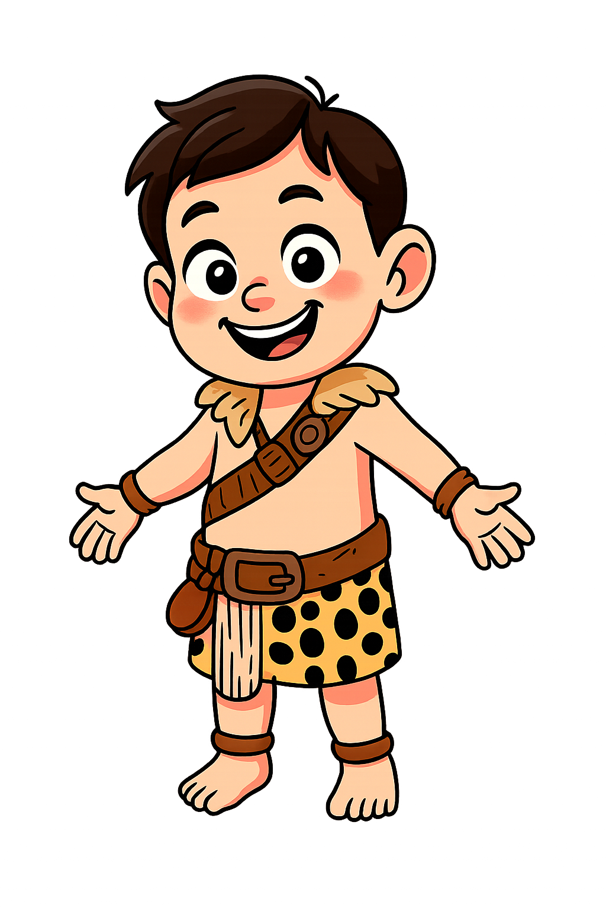

🔥
?
Le feu protégeait les hommes des bêtes sauvages.
-30 000
-15 000
-3 000
🐪
🏛️
?
Le Colisée de Rome pouvait accueillir 50 000 personnes !
-3 000
-753
-52
🏰
?
Les ponts-levis servaient à fermer l'entrée du château.
🛡️
476
800
1492
🎨
?
La Renaissance a redécouvert l'art antique.
🔭
1492
1500
1789
🏭
?
La machine à vapeur a révolutionné la production.
🚂
1789
1850
1945
💻
?
L'informatique a transformé notre monde.
🚀
1945
1990
2024

PRÉHISTOIRE
Mission
Place l'Homme de Cro-Magnon 🧔
dans son époque
Préhistoire
Antiquité
Moyen-Âge
Renaissance
Révolution Industrielle
Moderne
|||
Frise chronologique statique (à l'échelle)
-30 000
📍
-30 000
-3 000
476
1492
1789
1945
2024
Préhistoire
Antiquité
Moyen-Âge
Renaissance
Révolution Industrielle
Moderne
⬅️
➡️
⛰️
✌️
Souvenir de -30 000 !
REJOUER